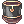
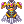
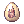
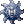
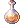

Primo's Ministrel Tank Guide
  | |||||||||||||||||||
|---|---|---|---|---|---|---|---|---|---|---|---|---|---|---|---|---|---|---|---|
| |||||||||||||||||||
The Minstrel (Mins) is the 3rd job class of Bards. Minstrels are primarily a support class, utilising musical skills to buff their teammates and hinder their enemies. Their signature skill, Poem of Bragi, reduces the cast delay between skills. With such a powerful utility, Minstrels are often an essential part of parties, in both PvM and BG/WOE.
The female counterpart of the Minstrel is the Wanderer.
Ministrel Tank
Ministrel is the most basic and flexible Tank for Novaro's Monster hunter. It is the most beginner friendly and always in high demand. It is the best for farming your Shadow Sets early on, and very easy to get into.
Stats
- STR 50 ~ 90
- AGI 90 ~ 110
- VIT 130
- INT 90 ~ 110
- DEX 90 ~ 120
- LUK 1
The most important is high vit for Tanking, and spread a bit of DEX/INT/AGI for spamming or Auto-attack.
=== Skill List === -> Dont forget to rebuff always.
 Poem of Bragi -> 30% ACD (reducing after cast delay). It's a must.
Poem of Bragi -> 30% ACD (reducing after cast delay). It's a must. Echo Song -> Gives a lot of DEF AND MDEF, always keep up.
Echo Song -> Gives a lot of DEF AND MDEF, always keep up. Frigg's Song -> extra Max HP for Tanking, nice to always keep up
Frigg's Song -> extra Max HP for Tanking, nice to always keep up
Gears
This build centers in building up the maximum race resistance you can get, the more you stack one single reduction, the better. So for Garronath you aim for Poison / Dragon and Nysori Water / Fish. There is an elemental / racial cap for MH content, but you should not think about it, because if you reach that high, you wouldn't need my advice. This build can work for any monster, just adapt the race and element and you are done!
| Item | Type | Card | Notes |
|---|---|---|---|
 Asgard Blessing [1] Asgard Blessing [1]
|
Upper |  Leaf Cat Card Leaf Cat Card  Essence of Evil VIT 3 Essence of Evil VIT 3
|
Very flexible headgear, maybe the cheapest and with best results. It gives a nice 5% resistance to all elements, some good HP Regen and +2 all stats. |
|  Guard's Cap [1] | Upper | Leaf Cat Card Essence of Evil VIT 3
|
Strong headgear when overrefined, can reach very high neutral resist values. |
| Aegir Helm [1] | Upper | Leaf Cat Card
|
Can be good when min maxing gears, gives a neat 10% fish resistance. |
 3D Glasses 3D Glasses
|
Mid | Very good all around, nice and budget friendly, gives a neat Increase neutral property resistance by 5%. | |
 Monocle [1] Monocle [1]
|
Mid | Leaf Cat Card
|
One of the few mid headgear with a slot. Nice for a bit more Water resistance for Nysori Skills. |
| Scuba Mask | Mid | If you in need of some extra water resistance, can work. | |
 Magical Booster [1] Magical Booster [1]
|
Mid | Leaf Cat Card
|
If you want to min-max, can be enchanted with HP% or Healing Received %. |
 Umbala Spirit Umbala Spirit
|
Lower | Kinda luxury slot, not that needed. Gives 1% HP. | |
 Poison Breath Poison Breath
|
Lower | If you're using a  Giant Snake Skin [1] as a Garment, you should use this lower headgear, gives more neutral resistance. Giant Snake Skin [1] as a Garment, you should use this lower headgear, gives more neutral resistance.
|
| Item | Type | Card | Notes |
|---|---|---|---|
 Gold Dragon Plate [1] Gold Dragon Plate [1]
|
Armor |  Twin Caput Card Twin Caput Card  Pot Dofle Card Pot Dofle Card
|
Can be enchanted with any race / element, and even a nice +HP % Bonus. Aim for having different plates for diff purposes, for Nysori aim for Fish% / Water enemies %. For Garronath Dragon % / Poison enemies %. Aim for the full combo with  Dragon Scale Hood [1] + Dragon Scale Hood [1] +  Dragon Scale Boots [1], my personal favorite. Dragon Scale Boots [1], my personal favorite.
|
 King Schmidt's Suit [1] King Schmidt's Suit [1]
|
Armor | Twin Caput Card Pot Dofle Card
|
When refined at least up to + 9 can be really good, but much more expensive than Gold Dragon Plate. For Garronath it's a beast. |
|  Aegir Armor [1] | Armor | Pot Dofle Card
|
When highly refined can be strong in combo with Aegir Helm [1]. |
| Item | Type | Card | Notes |
|---|---|---|---|
 Violin [4] Violin [4]
|
Weapon | Essence of Evil VIT 3
|
Most basic and efficient. Now that Climatic Fury is boosted, you can break charms easily with one. |
 Crimson Violin [2] Crimson Violin [2]
|
Weapon |  Tendrillion Card Tendrillion Card  Zipper Bear Card Zipper Bear Card  Ominous Assaulter Card Ominous Assaulter Card
|
When highly refined, can boost a lot your Climatic Fury damage. It has fewer slots, but is a nice option when your tanking gears are holding fine. |
| Item | Type | Card | Notes |
|---|---|---|---|
Bloody Knight's Shield [1]  Knight's Shield [1] Knight's Shield [1]  Cursed Knight's Shield [1] Cursed Knight's Shield [1]  Purified Knight's Shield [1] Purified Knight's Shield [1]
|
Shield |  Sky petite card Sky petite card  Rafflesia card Rafflesia card
|
BiS, can be enchanted with up to 14% race resistance. Can be a pain to enchant, but there is nothing better than this beast. Any version of Knight's Shield is fine, but Bloody is the cheapest to roll enchants. |
 Valkyrja's Shield [1] Valkyrja's Shield [1]
|
Shield | Sky petite card Rafflesia card
|
Good alternative, but doesnt provide racial resistance, if short on endeavor coins, go for it! |
 Immune Shield [1] Immune Shield [1]
|
Shield | Sky petite card Rafflesia card
|
Can be really good if highly refined, luxury option. |
| Item | Type | Card | Notes |
|---|---|---|---|
| Dragon Scale Hood [1]
|
Garment |  Raydric card Raydric card  [Bio 4 Randel Card] [Bio 4 Randel Card]
|
Second Piece of the Gold Dragon Plate [1] Combo, can be enchanted with any race / element, and even a nice + HP % and Bonus healing received %. Aim for having different plates for diff purposes, for Nysori aim for Fish% / Water enemies %. For Garronath Dragon % / Poison enemies %.
|
 Dragon Breath [1] Dragon Breath [1]
|
Garment | Raydric card [Bio 4 Randel Card]
|
Not as good as Dragon Scale Hood, but a very cheap and nice alternative. Gives a neat 15% dragon resistance. |
| Giant Snake Skin [1]
|
Armor | Raydric card [Bio 4 Randel Card]
|
Should be enchanted with Tripple Vit, and used with Poison Breath [1]. Not the best option, but can do the job if you got a good party.
|
| Item | Type | Card | Notes |
|---|---|---|---|
| Dragon Scale Boots [1]
|
Footgear |  Green Ferus card Green Ferus card  Fay Kanavian Card Fay Kanavian Card
|
Last piece of the Gold Dragon Plate [1] combo. Can be enchanted with any race / element, plus even a nice + HP % Bonus or Healing received %. Aim for having different plates for different purposes, for Nysori aim for Fish% / Water enemies %, For Garronath Dragon % / Poison enemies %.
|
 Temporal Boots Of Vitality [1] Temporal Boots Of Vitality [1]
|
Footgear | Green Ferus card Fay Kanavian Card
|
Can work too, enchant it with Muscular endurance and HP %, not the best but can do the work. |
| Item | Type | Card | Notes |
|---|---|---|---|
 King Schmidt's Rigid Insignia [1] King Schmidt's Rigid Insignia [1]
|
Acessory (Left) |  Phen card Phen card  Bloody Butterfly Card Bloody Butterfly Card
|
Gives a nice 10% HP bonus, and can even be enchant with Vit (3~5). The rest of the enchants are kinda waste (except if you follow the Temporal Boots Of Vitality [1] path) . Phen card is a MUST, so you don't end up having your casts interrupted. Bloody Butterfly Card is a bit worst alternative.
|
 Glorious Ring Glorious Ring
|
Acessory (Right) | 10% water resistance and is super easy and cheap to get. | |
 Royal Guard Ring [1] Royal Guard Ring [1]
|
Acessory (Right) |  Poporing card Poporing card Iara card Essence of Evil VIT 3 Iara card Essence of Evil VIT 3
|
HP % bonus, can be enchant with up to +7 VIT. |
 Physical Enhancer Ring [1] Physical Enhancer Ring [1]
|
Acessory (Right) | Poporing card Iara card Essence of Evil VIT 3
|
Luxury version of the Glorious Ring. Can be enchanted with up to 10 % elemental resistance (except neutral) and has a slot. Don't expect it to be cheap.
|
| Item | Type | Notes |
|---|---|---|
|  Marionette Egg | Pet | Nice plus to have, with neat 20% neutral resist proc. |
Shadow Sets
 Tension Shadow Earring Full Tension set is a nice begginer alternative, as you can farm materials in expedition mode.
Tension Shadow Earring Full Tension set is a nice begginer alternative, as you can farm materials in expedition mode.
- Full class shadow set is a lazy option, gives a lot of HP, STATS, DEF and MDEF and can be used in all content.
- The BiS is to follow the racial build with  Homer's Shadow Buckler (Nysori) /
 Dragoon Shadow Shield (Garronath) +
Dragoon Shadow Shield (Garronath) +  Large Shadow Plate
Large Shadow Plate
Savage Coast

Monster Hunter Skills
| Skill | Skill Type | Info |
|---|---|---|
| Elemental Aegis | Active | Gives 20% all elemental resistance to your whole party and while active increases elemental cap by 5%
|
| Defiant Stand | Active |
|
| Climatic Fury | Passive & Active | Passive
Fury Stack Damage Reduction Caps out at 6 stacks Active Consumes all Fury stack to deal damage |
| Vanguard | Active | Enters parrying stance, reducing all damage taken to 1. Gains A 15% max HP and -20% After Cast Delay buff after the stance
|
| Sentinel | Passive & Active | Passive
Active
|
Consumables
 Coldproof Potion Very cheap and good for extra water resist.
Coldproof Potion Very cheap and good for extra water resist.
 Mega Hunter's Potion Nice to heal when not beeing hit.
Mega Hunter's Potion Nice to heal when not beeing hit.
 Max Potion This is your best friend, keep it always well stocked.
Max Potion This is your best friend, keep it always well stocked.
-  Stoneskin Extract Extra resistance.
 Shock Trap Very useful to stun lock boss.
Shock Trap Very useful to stun lock boss.
 Flash Bomb Use it to cancel boss teleport.
Flash Bomb Use it to cancel boss teleport.
- Psychoserum Please bring.
 Dash Juice Very useful.
Dash Juice Very useful.
MH Gameplay
- Always start with sentinel, then start spamming and cycling between Musical Strike and Severe Rainstorm, sentinel is the most important skill as it is your main skill to hold agro. The other option is to hold aggro with auto attack, for that you should aim 193 aspd. Aggro is based in the number of times you hit, so the faster you hit the better. Remember to always keep a look at the aggro bar. Vanguard gives you fury stacks, also when you get hit by great monster (max 6.), when you reach 6 stacks, use climatic fury for a huge damage.Elemental aegis is great to help tanking, dont forget to use it. Defiant stand is for emergency, keep it for bad situations.
Good luck !
Bio 5 Minstrel
The best way to farm in Bio 5 for beginners is actually by playing as Performers, cause they don't really need high end gears to do it. The most important things are "Keep The Songs Up". Being Bio 5 Minstrel is exactly the same thing as being Pure Support, but we are focusing more on the necessary skills and budget equipment here. The most important equipment is your weapon, as your main job is to keep songs up. Look for Weapons with unbreakable effect.
- Basic gears
Super Cheap way is to buy more than one npc instrument such as  Violin [3] and swap when it breaks or just place a
Violin [3] and swap when it breaks or just place a Golem Card in any instrument or
Golem Card in any instrument or  Restless Dead Card in Armor.
Restless Dead Card in Armor.
- Another option would be to buy one of these weapons with "cannot be broken in battle" enchant :

- Status Build
- STR > 38
- AGI > 100 -> Provide Sleep Immunity
- VIT > 100 -> Stun Immunity
- INT > 120 -> at 100 Blind/Silence Immunity
- DEX > 120 -> to have the fixed cast time reduction from the
 Temporal Boots of Dexterity
Temporal Boots of Dexterity - LUK > 1 -> having 0 or -1 LUK for Curse Immunity.
 Essence of Evil Dex 3 is a good way to decrease your LUK to 0.
Essence of Evil Dex 3 is a good way to decrease your LUK to 0.
- Skill List
 Into The Abyss -> to allow Sorcerer use the
Into The Abyss -> to allow Sorcerer use the  Land Protector endlessly
Land Protector endlessly- Poem of Bragi -> providing faster cast time, and reducing after cast delay. It's a huge boost for your party
 Song of Mana -> heals SP and provide great SP Regeneration
Song of Mana -> heals SP and provide great SP Regeneration- Frigg's Song -> extra Max HP for Royal Guard, and make Rangers less squishy
- Death Valley -> to revive dead party members
- Echo Song -> Gives a lot of DEF AND MDEF, always keep up.